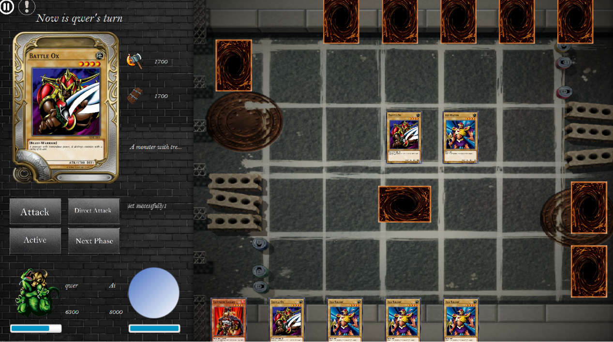
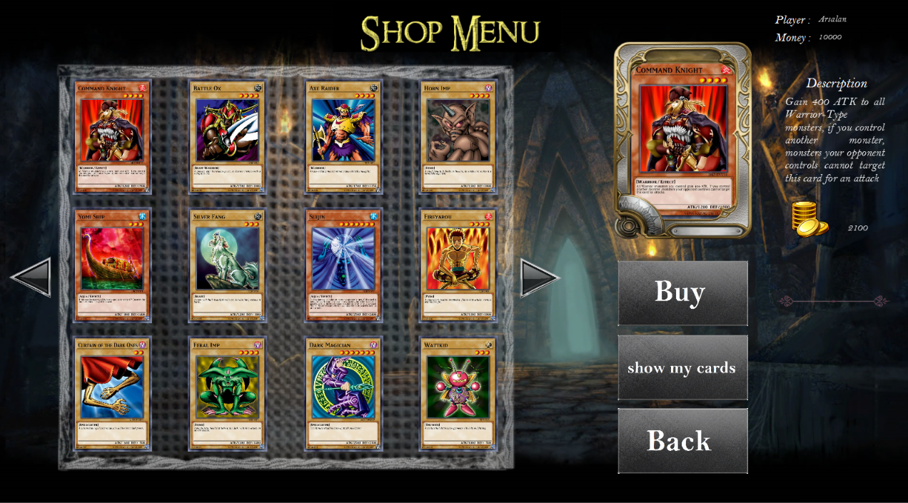

Yu-Gi-Oh
Supervised by Amin Fazli
A version of Yu-Gi-Oh, the well-known card game, built with Java and JavaFX during my first year at Sharif University of Technology. It covers object-oriented programming (OOP) and the networking needed for multiplayer games.

Architecture
The game is built with object-oriented design: cards, players, decks, boards, phases, and effects are reusable domain classes and enums. It follows an MVC-style structure, where models store the game state, JavaFX views render each screen, and controllers run the rules and menus.
FXML scenes cover registration, deck building, the card shop, and the turn-based duel board. For multiplayer, a TCP protocol connects the desktop client to a Java server that keeps accounts and match state, while duels against the AI run locally.
